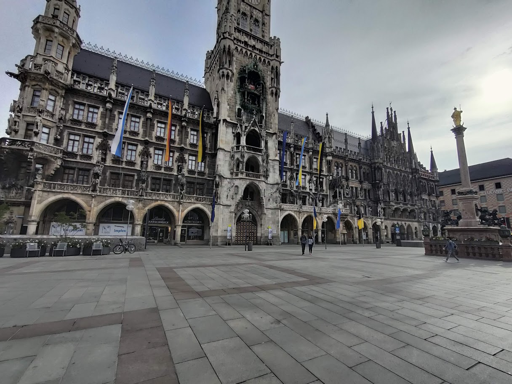
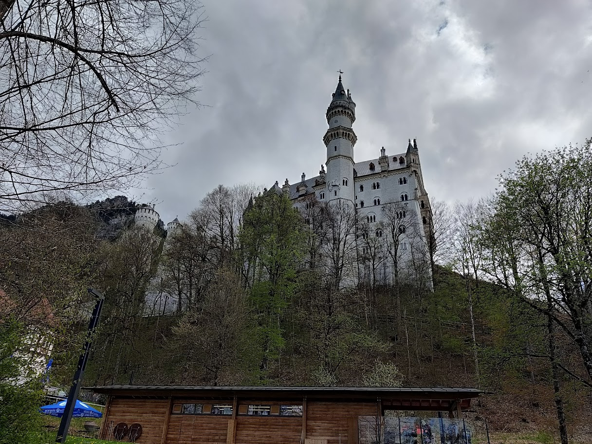
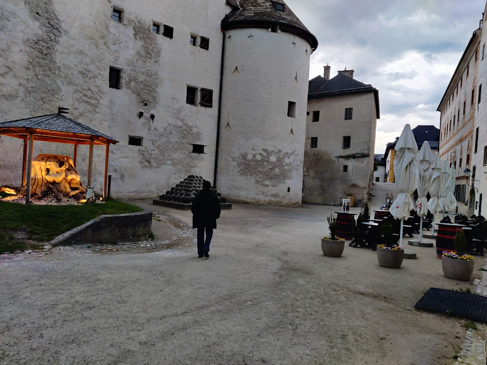
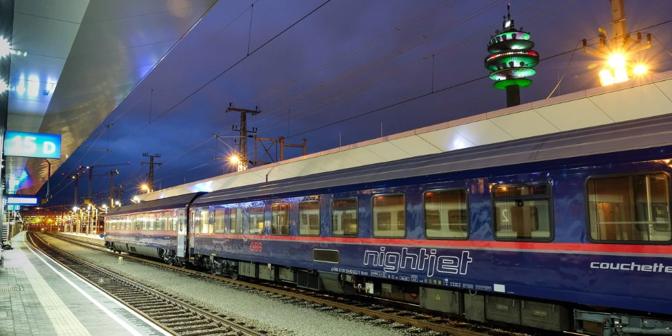
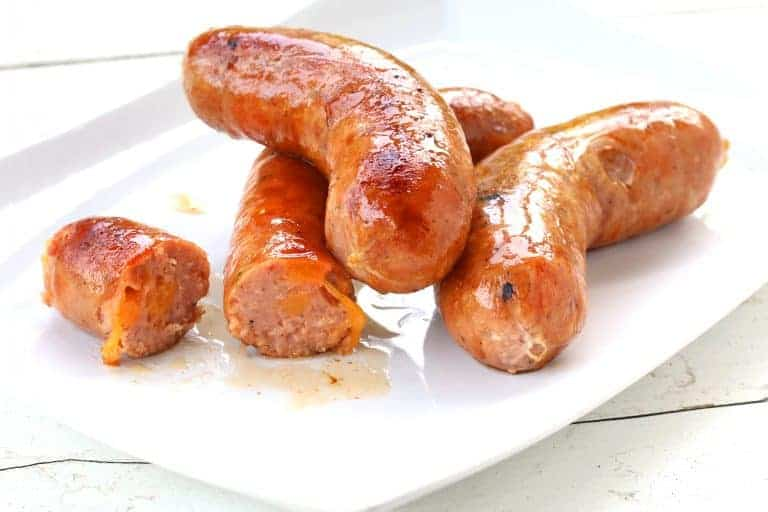
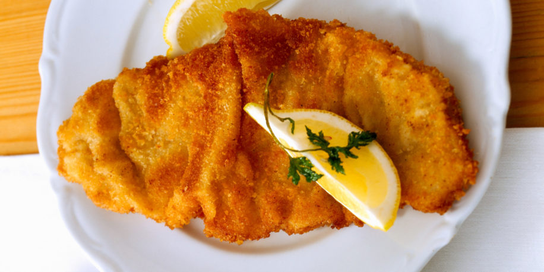

Munich is a city which I visited and it has a nice history but a dark one at the same time. It is known for it's beers and breweries. On the first day of my stay there it was walking around the city and a walking tour about some of the history of the churches. On the second day I went on a walking tour which was about the third reich also known as the Nazis. Munich is actually where they started up. I got to see where Hitler made his first speech and other things. On the third day I went to 2 castles far away which were on hills which we had to climb. To be honest the castles looked better from the outside than they did on the inside. But they were really cool. On the last day I went to an escape room which was really fun and later I went to something called springfest. It was really fun and I won lots of prizes from carnival games. Below you can see the main square near where I stayed and a castle which I visited, I took the pictures. The castle reminds me of a fairytale. I would advise you take the horse carriage up the hill if you dont like walking up and down steep surfaces. But once you get up there, the view is really good and try to hope that the bridge will be open because then you can get a really good picture of the castle. When I went the bridge was showing signs of breaking so I couldnt go on it. The inside is also pretty nice. Sadly the building could not be finished by the king because he died and then the family ran out of money. When you get there you should have the famous sausage from Munich. And also something very popular in Munich which I am not allowed to have, beer.
 In these two pictures you can see the castle Neuchwanstein(I probably spelt that wrong) and the main square, both of the pictures I took.
For more info on Munich click hereI went to both the places by a train. The place that I stayed at in Salzburg was an air B&B which was really nice. If you go there you should have schnitzel. In Salzburg what I did on the first day was boat ride around the big river. A boat ride is best to do in Salzburg. Apparently the current of the current of the river was very strong, so when when the boat rides were supposed to be opened it got delayed because the engines were not strong enough to go against the river current.On the second day I went on a Sound Of Music tour because the musical sound of music was filmed in Salzburg. I got to see places where they filmed and what are those places now. On the third day I went to a museum of natural history which was huge. It had 2 different buildings and we could not finish them both. We finished one though. There were multiple floors on both, one on the first building was really cool because it had reptiles like snakes, turtles and lizards and other cool stuff. On the third day I also did a walking tour about Salzburg. The sound of music tour was cooler for people older than me since it was a movie of their time
This picture is the inside of the fort at the top of the hill. We went there for the Mozart concert. It was played by a group of 6 people.
For more info on Salzburg click hereFor travel what I did was I went by train from the Netherlands to Munich and spent 4 days there. After that I took a train to Salzburg. The train from Netherlands to Munich took 7 hrs and Munich to Salzburg took 2 hrs. But I only took a train because I live in the country next to Germany which is the Netherlands. Inside the cities I mostly walked but when I did not walk I used a cab or the subway. The first train was a night train as well so I got to sleep, without a blanket but still it was fine. I would recommend the night train because then you can get some sleep instead of just being bored the entire ride. There are also usually charging ports inside night trains and temperature controls but I dont recommend changing those because they are set at a good temperature. Below you can see the train I took.
For food I mostly had the local food which other tourists reccomended. Like in Salzburg I had the Schnitzel which is very popular there. Like in Munich I had a lot of sausages because it is the most popular there. We trusted other tourists on websites saying what places to go to. All of them were pretty good.
 